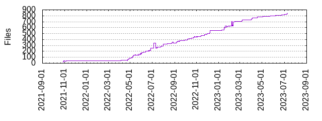

Files
- Total files
- 837
- Total lines
- 120655
- Average file size
- 8478.37 bytes

| Extension | Files (%) | Lines (%) | Lines/file |
|---|
| 202 (24.13%) | 2083 (1.73%) | 10 |
| art | 2 (0.24%) | 16 (0.01%) | 8 |
| bat | 2 (0.24%) | 6 (0.00%) | 3 |
| bazel | 147 (17.56%) | 5977 (4.95%) | 40 |
| bazelrc | 2 (0.24%) | 41 (0.03%) | 20 |
| bzl | 71 (8.48%) | 38727 (32.10%) | 545 |
| bzlmod | 23 (2.75%) | 109 (0.09%) | 4 |
| cjs | 1 (0.12%) | 19 (0.02%) | 19 |
| cmd | 1 (0.12%) | 5 (0.00%) | 5 |
| common | 1 (0.12%) | 76 (0.06%) | 76 |
| html | 4 (0.48%) | 22 (0.02%) | 5 |
| js | 102 (12.19%) | 18666 (15.47%) | 183 |
| json | 90 (10.75%) | 12452 (10.32%) | 138 |
| less | 1 (0.12%) | 21 (0.02%) | 21 |
| list | 1 (0.12%) | 3 (0.00%) | 3 |
| lock | 2 (0.24%) | 2016 (1.67%) | 1008 |
| md | 41 (4.90%) | 2616 (2.17%) | 63 |
| mf | 2 (0.24%) | 58 (0.05%) | 29 |
| mjs | 12 (1.43%) | 10192 (8.45%) | 849 |
| patch | 10 (1.19%) | 62 (0.05%) | 6 |
| sh | 29 (3.46%) | 1505 (1.25%) | 51 |
| sum | 1 (0.12%) | 2 (0.00%) | 2 |
| testing | 1 (0.12%) | 4 (0.00%) | 4 |
| tgz | 2 (0.24%) | 2464 (2.04%) | 1232 |
| tmpl | 1 (0.12%) | 6 (0.00%) | 6 |
| tpl | 2 (0.24%) | 506 (0.42%) | 253 |
| ts | 15 (1.79%) | 2841 (2.35%) | 189 |
| txt | 1 (0.12%) | 0 (0.00%) | 0 |
| yaml | 65 (7.77%) | 22492 (18.64%) | 346 |
| yml | 3 (0.36%) | 52 (0.04%) | 17 |